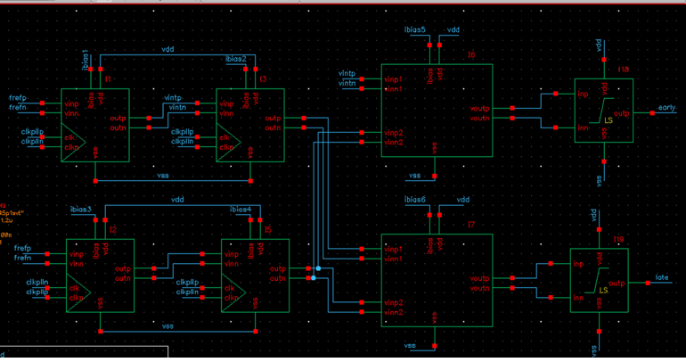
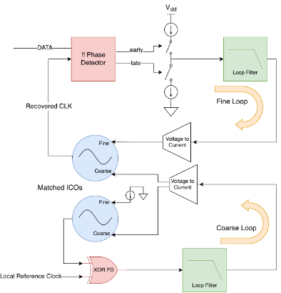
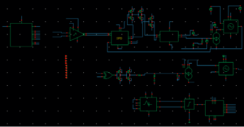
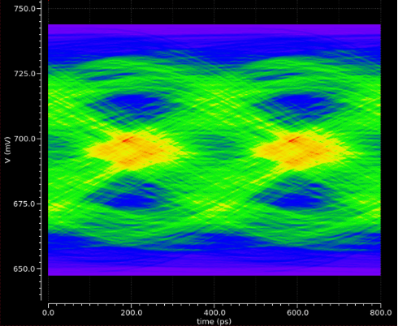
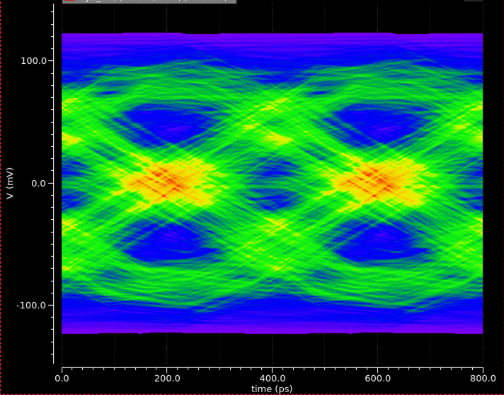
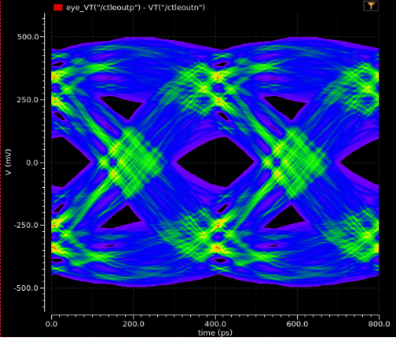
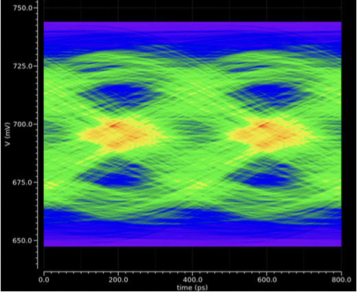
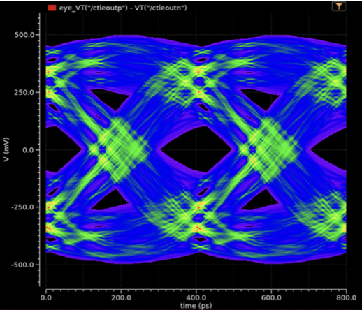

2.5GB/s Plesiochronous SERDES in GPDK45






Project Overview
For a Cornell course on analog IC design, I helped build a 2.5GB/s SERDES in GPDK 45nm. This included designing, simulating, and laying out, design feedback equalization (DFE), continuous time linear equalization (CTLE), serializers and deserializers, clock and data recovery (CDR) and transmit equalization (TXEQ) circuitry. Subcircuits included current mode logic and it's associated CMOS conversion circuitry, as well as a voltage controlled oscillator (VCO), phase locked loop (PLL), and channel model.
Assuming no equalization was performed on the signal, our eye diagram, a measure of how clearly the 1's and 0's being sent through the system are seperable, looked something like the following image. As you can see, the eye, which is a superimposed image of all of the transmitted signals, is very "closed," meaning the data at the output cannot be decoded in any meaningful way.

However, following our TEXEQ, CTLE, DFE, and CDR, the eye opens significantly, as is seen below, highlighting the success of our SERDES design. The eye below is for a 2.5GB/s data rate passing through a single real pole and complex pole pair channel.
